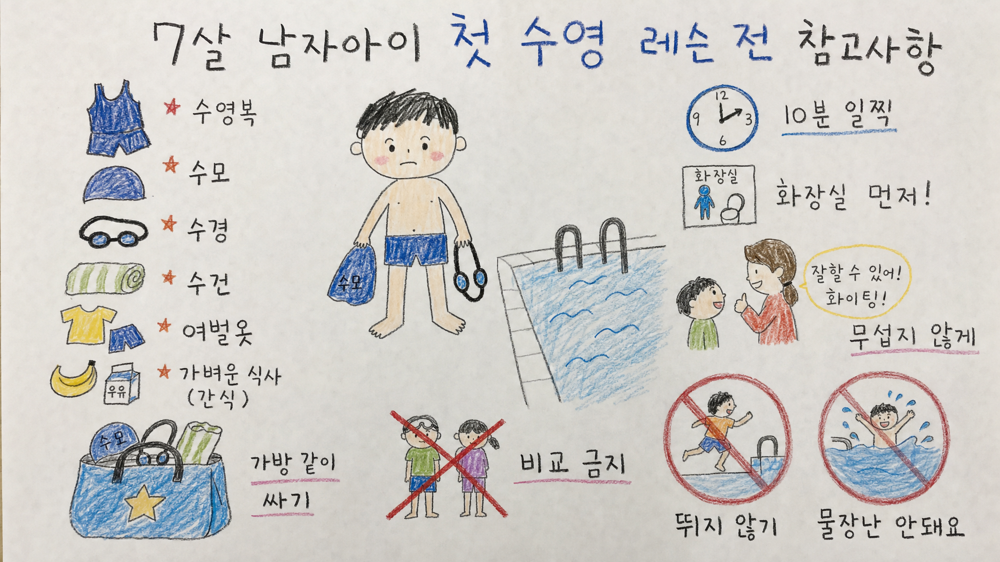

260505 7살 남자아이 첫 수영 레슨 전 참고사항 보고서모드2

핵심 결론
- 🏊 첫 수업 목표는 수영 실력보다 물 공포 줄이기임
- 🎒 준비물보다 중요한 건 아이가 수업 흐름을 미리 아는 것임
- 👨👦 부모의 비교·압박이 첫 수영 기억을 망칠 수 있음
1. 첫 레슨의 진짜 목표
7살 남자아이의 첫 수영 레슨은 기술 습득보다 물과 수영장 환경에 안전하게 적응하는 시간이 되어야 한다.
첫날부터 자세, 킥, 호흡, 진도에 집중하면 아이는 수영을 놀이와 배움이 아니라 평가와 압박으로 받아들일 수 있다.
부모가 잡아야 할 첫날 기준은 “잘했는가”가 아니라 “무섭지 않게 끝났는가”다.
| 좋은 첫날 목표 | 피해야 할 목표 |
|---|---|
| 물에 들어가 보기 | 남들보다 빨리 배우기 |
| 선생님 지시 듣기 | 자세 완벽하게 만들기 |
| 무섭지 않게 끝내기 | 울지 말라고 압박하기 |
| 다음에도 가볼 마음 남기기 | 첫날 성과 확인하기 |
2. 준비물 체크리스트
필수 준비물은 복잡하지 않다.
- 수영복
- 수모
- 물안경
- 큰 수건 또는 후드타월
- 샤워용품
- 여벌 속옷과 옷
- 젖은 옷 담을 비닐 또는 방수 파우치
- 수업 후 마실 물
처음에는 장비를 많이 사는 것보다 아이 몸에 잘 맞는지 확인하는 것이 더 중요하다.
특히 물안경은 수업 전에 집에서 한 번 써보게 하는 편이 좋다.
3. 전날 해주면 좋은 준비
전날에는 기술 설명보다 수업 흐름을 알려주는 것이 좋다.
예시는 이렇게 말하면 된다.
> “내일은 선생님 만나고, 옷 갈아입고, 물에 들어가서 천천히 배워볼 거야. 처음이라 어색해도 괜찮아.”
아이와 함께 가방을 싸면 낯선 수업에 대한 통제감이 생긴다.
수영복, 수모, 물안경을 직접 만져보고 넣게 하면 첫 수업이 조금 덜 낯설어진다.
4. 당일 운영 팁
첫날은 여유가 가장 큰 안전장치다.
| 상황 | 추천 |
|---|---|
| 도착 시간 | 10~15분 일찍 도착 |
| 식사 | 수업 1~2시간 전 가볍게 |
| 화장실 | 수업 전 미리 다녀오기 |
| 탈의/샤워 | 부모가 천천히 안내 |
| 수업 후 | 평가보다 느낌부터 묻기 |
도착이 늦거나 부모가 급해지면 아이는 수영장 자체를 긴장 상황으로 기억할 수 있다.
5. 부모 태도가 가장 중요함
첫 수영 레슨에서 부모의 표정과 말투는 아이에게 강한 신호가 된다.
좋은 말은 이런 쪽이다.
- “처음인데 들어간 것만 해도 잘했어”
- “무서웠던 순간 있었어?”
- “다음엔 뭐가 조금 더 쉬울 것 같아?”
피해야 할 말은 이런 쪽이다.
- “다른 애들은 잘하던데?”
- “왜 그것도 못 해?”
- “울면 안 돼”
- “돈 냈으니까 제대로 해야지”
수영은 몸으로 배우는 기술이라 불안이 커지면 배우는 속도도 느려진다.
6. 안전 규칙은 짧게 반복
7살 아이에게 긴 안전 설명은 잘 남지 않는다.
짧은 규칙 3개만 반복하는 편이 낫다.
- 🛑 수영장에서는 뛰지 않기
- 💦 물가에서 장난치지 않기
- 👂 선생님 말 먼저 듣기
이 세 가지가 지켜지면 첫 수업의 안전 리스크는 크게 줄어든다.
7. 반대의견과 리스크
| 리스크 | 설명 | 대응 |
|---|---|---|
| 너무 이른 시작 | 아이가 물을 강하게 무서워하면 역효과 가능 | 강제하지 말고 관찰·체험부터 |
| 부모 기대 과다 | 첫날 성과 확인이 압박으로 바뀜 | 재미·안전·적응만 확인 |
| 장비 불편 | 물안경·수모 불편이 수영 거부로 연결 | 집에서 미리 착용 연습 |
| 수업 후 평가 | “뭐 배웠어?”가 시험처럼 느껴질 수 있음 | “어땠어?” “뭐가 재밌었어?”로 묻기 |
최종 판단
7살 남자아이의 첫 수영 레슨은 실력보다 감정 기억이 중요하다.
첫날을 편안하게 끝내면 다음 수업에서 기술을 배울 여지가 생긴다.
부모의 역할은 아이를 첫날부터 잘하게 만드는 것이 아니라, 아이가 “다음에도 해볼 만하다”고 느끼게 만드는 것이다.
Jeremy's Insight by 🤖 딸깍봇 https://blog.naver.com/jeremylee0213